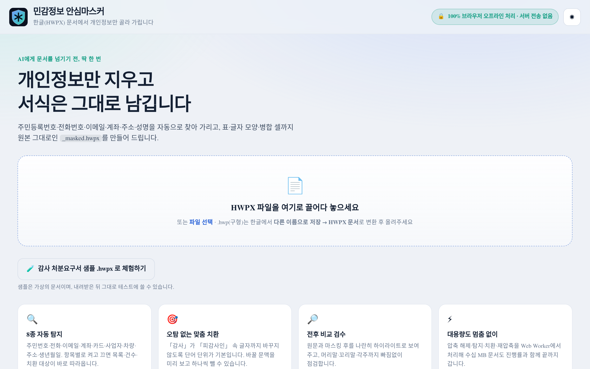
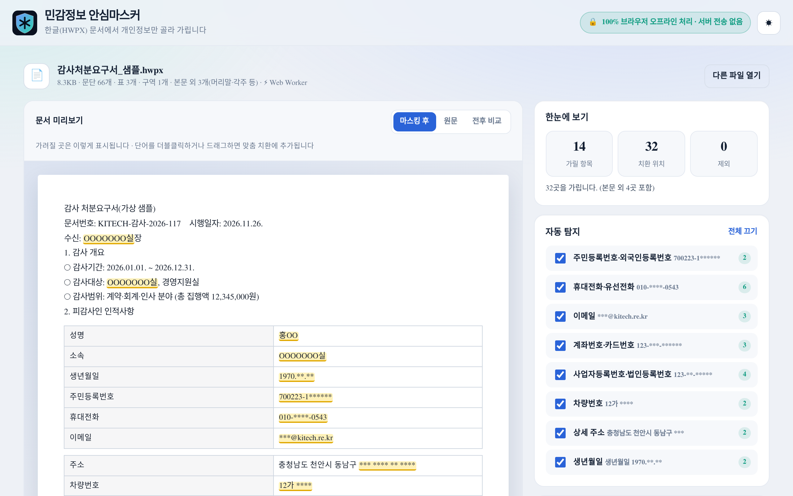
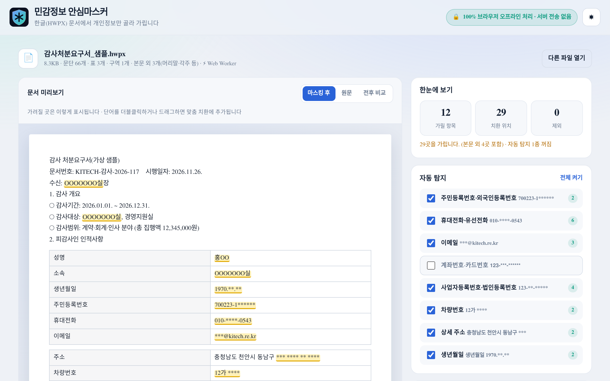
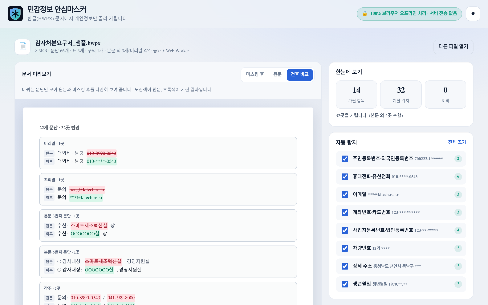
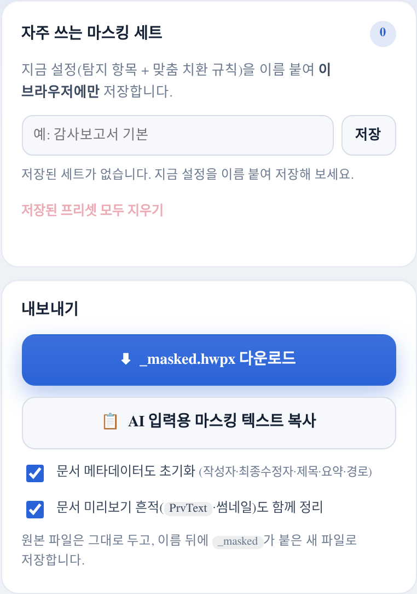

AI에게 문서를 넘기기 전, 외부로 자료를 보내기 전에 딱 한 번 — 주민등록번호·전화번호·계좌·이름을
브라우저 안에서만 가리고, 표·글자 모양·병합 셀은 그대로 남긴 _masked.hwpx를 만드는 도구입니다.
.hwpx 파일을 끌어다 놓습니다. (.hwp 구형 파일은 한글에서 다른 이름으로 저장 → HWPX 문서로 바꿔 올립니다.)감사 처분요구서·검토서 같은 한글 문서를 외부 AI에 붙여 넣거나 기관 밖으로 보내기 전, 개인정보가 그대로 들어 있으면 그 자체가 문제가 됩니다. 안심마스커는 문서에서 개인정보만 찾아 가리고, 표·글자 모양·병합 셀 같은 서식은 원본 그대로인 새 문서를 만들어 줍니다. 파일은 브라우저 메모리 안에서만 처리되고, 어디로도 전송되지 않습니다.
| 단계 | 하는 일 | 화면 |
|---|---|---|
| ① 열기 | .hwpx를 끌어다 놓거나 선택. 샘플 문서로 먼저 연습할 수 있습니다. | 시작 화면 드롭존 |
| ② 자동 탐지 | 주민번호·전화·이메일·계좌/카드·사업자/법인·차량·상세주소·생년월일 8종을 찾습니다. 항목별 ON/OFF. | 오른쪽 자동 탐지 |
| ③ 맞춤 치환 | 표 라벨(성명·부서·소속 등) 옆 값 후보를 추천하고, 단어를 직접 추가합니다. 바꾸기 전 영향 범위를 먼저 보여 줍니다. | 성명·부서·금액 맞춤 치환 |
| ④ 검수 | 마스킹 후 / 원문 / 전후 비교 3가지 뷰. 머리말·꼬리말·각주·글상자까지 점검합니다. | 문서 미리보기 |
| ⑤ 저장 | 원본이름_masked.hwpx 다운로드. 문서 메타데이터·미리보기 흔적도 정리(선택). | 내보내기 |
| ⑥ 확인 | 내려받은 파일을 한컴오피스(한글)에서 열어 서식과 가림 상태를 최종 확인합니다. | 한글 프로그램 |
.hwpx는 ZIP 압축 파일입니다. 이 도구는 그 안의 글자(<hp:t>)만 바꾸고
태그·속성·표 구조·스타일 정의는 원본 바이트 그대로 다시 담습니다.
그래서 표·병합 셀·글자 모양이 흔들리지 않고, 한글에서 열었을 때 원본과 같은 문서로 보입니다.
700223-1234567 → 700223-1******,
010-8990-0543 → 010-****-0543, hong@kitech.re.kr → ***@kitech.re.kr.
일반적인 감사 기간·금액(2026.01.01. ~ 2026.12.31., 12,345,000원)은 건드리지 않습니다.
ArrayBuffer로 읽어 브라우저 메모리에서만 처리하고, 압축 해제·탐지·치환·재압축은 같은 페이지의 Web Worker가 맡습니다.
외부 서버·CDN·분석 도구로 보내는 요청이 없고, 네트워크를 끊고 열어도 동작합니다.
저장되는 것은 프리셋(설정)뿐이며 그것도 [저장된 프리셋 모두 지우기]로 즉시 지울 수 있습니다.
접속 주소는 https://hwpx-masker.vercel.app/ 입니다. 시작 화면은 파일을 넣는 곳 하나만 기억하면 됩니다.

샘플(감사처분요구서_샘플.hwpx)은 가상의 문서이며, 열면 아래처럼 작업 화면으로 넘어갑니다.

| No | 영역 | 하는 일 |
|---|---|---|
| ① | 파일 정보 줄 | 연 파일 이름과 크기 · 문단 수 · 표 수 · 구역 수 · 본문 외 영역 수, 처리 엔진(⚙ Web Worker) 표시. 오른쪽 [다른 파일 열기]. |
| ② | 문서 미리보기 | 가려질 곳이 노란 표시로 보입니다. 위 탭으로 마스킹 후 · 원문 · 전후 비교를 전환합니다. |
| ③ | 한눈에 보기 | 가릴 항목(서로 다른 값의 수) · 치환 위치(문서에서 바뀌는 곳) · 제외(문맥 단위로 뺀 곳). 아래에 요약 문장과 꺼 둔 탐지 항목 안내. |
| ④ | 자동 탐지 | 8종 항목의 체크박스·예시·건수. 끄면 목록·건수·미리보기·실제 치환이 그 자리에서 함께 바뀝니다. 오른쪽 [전체 끄기]/[전체 켜기]. |
| ⑤ | 성명·부서·금액 맞춤 치환 | 표 라벨 옆 값 후보(칩)와 직접 입력 폼. 바꿀 단어를 추가하면 영향 범위 패널이 열립니다. |
| ⑥ | 가릴 항목 | 찾은 값 목록 — 원본 → 가린 결과, 종류, 몇 곳인지. 맞춤 항목은 단어/부분 표시와 [범위]·[✕] 버튼이 붙습니다. |
| ⑦ | 본문 외 영역 점검 | 머리말·꼬리말·각주·미주·글상자·캡션을 같은 규칙으로 점검한 결과(민감정보가 없으면 그렇게 표시). |
| ⑧ | 내보내기 | [_masked.hwpx 다운로드] · [AI 입력용 마스킹 텍스트 복사] · 메타데이터 초기화 / 미리보기 흔적 정리 체크박스. |
가릴 문서를 엽니다. 구형 .hwp는 먼저 HWPX로 저장해야 합니다.
.hwp(구형 바이너리)를 올리면 “구형 .hwp 파일은 바로 열 수 없습니다. 한글에서 [다른 이름으로 저장 → HWPX 문서]로 변환한 뒤 올려주세요.” 안내가 나옵니다. 한글에서 F12(다른 이름으로 저장) → 파일 형식 HWPX 문서로 저장하세요.문서를 열면 바로 자동 탐지 결과가 나옵니다. 항목별 체크박스로 가릴 종류를 정합니다.
| 항목 | 원본 → 결과 | 설명 |
|---|---|---|
| 주민등록번호·외국인등록번호 | 700223-1234567 → 700223-1****** | 앞 7자리만 남깁니다. |
| 휴대전화·유선전화 | 010-8990-0543 → 010-****-0543041-589-8000 → 041-***-8000 | 국번과 끝 4자리를 남깁니다. |
| 이메일 | hong@kitech.re.kr → ***@kitech.re.kr | 아이디만 가리고 도메인은 남깁니다. |
| 계좌번호·카드번호 | 123-456-789012 → 123-***-******1234-5678-9012-3456 → 1234-****-****-**** | 앞부분(은행 구분·카드 앞 4자리)만 남깁니다. |
| 사업자등록번호·법인등록번호 | 123-45-67890 → 123-**-***** | 앞 3자리만 남깁니다. |
| 차량번호 | 12가 3456 → 12가 **** | 뒤 숫자 4자리를 가립니다. |
| 상세 주소 | 충청남도 천안시 동남구 대흥로 123, 4층 402호 → 충청남도 천안시 동남구 *** **** ** **** | 시·군·구까지 남기고 뒤를 가립니다. |
| 생년월일 | 생년월일 1970.02.23 → 생년월일 1970.**.** | 연도만 남깁니다. |

숫자 6-숫자 7 형태라 기계적으로는 구분이 안 됩니다. 이 도구는 표 라벨과 앞 단어(법인) 문맥을 보고 갈라냅니다.
라벨이 없는 곳에서 헷갈리는 값이 보이면 [가릴 항목]에서 실제 값을 확인하고, 필요하면 항목 체크를 풀거나 직접 규칙을 추가하세요.
이름·부서·금액은 모양만으로는 개인정보인지 알 수 없습니다. 그래서 표 라벨을 단서로 후보만 추천하고, 최종 선택은 사람이 합니다.
홍길동, 감사실, 3,250,000원). 가리는 방식을 함께 고릅니다 — 자동 / 가운데 가리기(홍OO) / 끝 가리기(OO실) / 전부 가리기(***) / 금액 가리기(*,***,***원).저장 전 마지막 관문입니다. 전후 비교 탭은 바뀌는 문단만 모아 원문(노랑·취소선)과 가린 결과(초록)를 나란히 보여 줍니다.


| 항목 | 내용 |
|---|---|
| _masked.hwpx 다운로드 | 원본은 그대로 두고 원본이름_masked.hwpx로 저장합니다. 저장 후 “저장했습니다 · 파일이름 (크기) · 메타데이터 N항목 초기화” 안내가 나옵니다. |
| AI 입력용 마스킹 텍스트 복사 | 가린 본문을 일반 텍스트로 복사합니다. 챗GPT·제미나이 등에 문서를 ‘첨부’하지 않고 문장만 물어볼 때 씁니다. 서식은 빠지고 글자만 남습니다. |
| 문서 메타데이터도 초기화 기본 켜짐 | 작성자·최종수정자·제목·요약·최근 경로·사용자 이름 등 작성자 계열 값을 비웁니다. 문서 서식 정의는 유지됩니다. |
| 문서 미리보기 흔적도 함께 정리 기본 켜짐 | 한글이 문서 안에 남기는 미리보기 텍스트(PrvText)를 가린 문장으로 다시 쓰고, 미리보기 썸네일은 빈 이미지로 바꿉니다. 겉으로 보이지 않는 곳에 원문이 남는 것을 막습니다. |
같은 종류의 문서를 반복해서 가린다면, 지금 설정(탐지 항목 + 맞춤 치환 규칙)을 이름 붙여 저장해 두고 다음 문서에서 [불러오기]로 되살립니다. 예: “감사보고서 기본” — 주민번호·전화·계좌·주소 ON, 이름·부서 후보 포함.
localStorage에만 남습니다. 다른 PC·다른 브라우저에서는 보이지 않고, 브라우저 데이터를 지우면 함께 사라집니다.
문서 내용은 저장되지 않습니다 — 새로고침하면 열어 둔 문서 작업은 사라지니, 내려받은 _masked.hwpx를 보관하세요.
| 한계 | 대응 |
|---|---|
.hwp(구형 바이너리)는 열 수 없습니다. | 한글에서 다른 이름으로 저장 → HWPX 문서로 변환 후 올립니다. |
| 암호가 걸린 문서·DRM 문서는 열리지 않습니다. | 암호를 먼저 풀거나, 원본 작성자에게 받아 다시 시도합니다. |
| 이름·부서·금액은 자동으로 추측하지 않습니다. | 오탐을 막기 위한 설계입니다. 라벨 후보 + 직접 지정으로 처리하세요. |
| 미리보기는 근사 화면이고, 아주 큰 문서는 앞부분만 그립니다. | 치환은 전체에 적용되지만, 최종 확인은 한글에서 원본 서식으로 합니다. |
| 메타데이터 초기화는 작성자 계열 값만 비웁니다. | 문서 서식 정의는 유지됩니다. 그 밖의 흔적은 사용자가 따로 확인하세요. |
| 60MB가 넘는 파일은 받지 않습니다. | 한글에서 문서를 나누어 처리합니다. |
Q1.파일이 정말 어디로도 전송되지 않나요?
전송되지 않습니다. 파일은 브라우저 메모리에서만 처리되고, 압축 해제·탐지·치환·재압축을 이 페이지 안의 Web Worker가 맡습니다. 외부 서버·CDN·통계 도구로 보내는 요청이 없어서 네트워크를 끊어도 동작합니다. 화면 위 배지의 “100% 브라우저 오프라인 처리 · 서버 전송 없음”이 이 뜻입니다.
Q2.가린 곳이 너무 많거나, 꼭 남겨야 할 값이 가려졌습니다.
자동 탐지에서 그 항목 체크를 끄면 전체에서 빠집니다. 한 값만 빼고 싶으면 가릴 항목 목록에서 그 줄의 체크를 끄거나 [✕]로 빼세요. 맞춤 치환은 [범위]에서 문맥별로 제외할 수 있습니다.
Q3.표 안의 값이 가려지지 않고 남았습니다.
표 라벨이 없는 값은 후보로 잡히지 않을 수 있습니다. 맞춤 치환에 그 값을 직접 추가하거나, 미리보기에서 해당 단어를 더블클릭해 추가하세요. 전후 비교에서 그 문단이 바뀌는지 확인하면 확실합니다.
Q4.저장한 파일을 한글에서 열었더니 표가 달라 보입니다.
한글에서 글자만 바뀌고 표·셀 병합·글자 모양 정의는 원본 그대로입니다. 미리보기와 실제 서식은 다를 수 있으니 실제 HWPX를 열어 판단하세요. 만약 표 구조 자체가 달라졌다면 원본 파일을 다시 올려 재작업하고, 그 사실을 함께 남겨 주세요.
Q5.AI에게 문서를 그대로 주면 안 되나요?
업무 문서에는 이름·연락처·계좌 같은 정보가 함께 들어 있는 경우가 많습니다. _masked.hwpx 또는 [AI 입력용 마스킹 텍스트 복사]로 가린 뒤 넘기면, 문장 구조와 맥락은 그대로 두고 신원 정보만 뺄 수 있습니다.
Q6.작업 중이던 내용이 사라졌습니다.
문서 작업 내용은 어디에도 저장하지 않습니다(새로고침 시 사라짐). 내려받은 _masked.hwpx가 결과물이므로, 검수가 끝나면 바로 저장하세요.
프리셋(설정)만 브라우저에 남습니다.
_masked.hwpx로. 원본은 원래 파일 이름 그대로 보관됩니다.